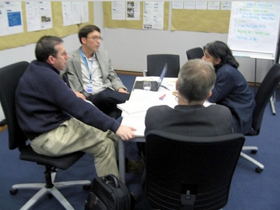

12.5 Passo Três: Trabalhar em equipe



Um dos caminhos mais consolidados para assegurar a qualidade do ensino assenta no trabalho colaborativo em equipe. Este aspeto é abordado em diversos pontos desta obra, como no Capítulo 9, Seção 9.7, no Capítulo 10, Seção 10.4 e no Capítulo 12, Seções 12.4 e 12.6.
12.5.1 Por que trabalhar em equipe?
Para a maioria dos docentes, a docência presencial é uma atividade individual, de pendor reservado entre o professor e a sua turma. O ensino apresenta-se como um ato pessoal. Contudo, o ensino híbrido e, sobretudo, o on-line puro diferem da sala de aula convencional. Exigem competências técnicas e metodológicas que a maioria dos docentes, em especial os que iniciam o percurso no digital, pode não possuir em nível consolidado.
As dinâmicas de interação on-line exigem organização diferenciada face ao presencial, dedicando-se especial atenção à estruturação de atividades digitais adequadas e à organização de conteúdos que facilitem a aprendizagem no ambiente assíncrono. O design instrucional assume papel relevante no desenvolvimento de competências para a era digital. Trata-se de questões de pendor pedagógico para as quais a maioria dos docentes do ensino superior recebeu pouca ou nenhuma formação. A par destas dinâmicas letivas, registram-se desafios tecnológicos, necessitando frequentemente os docentes de apoio na produção de recursos visuais ou gravações de vídeo.
Outro argumento para o trabalho colaborativo reside na gestão da carga horária. A docência digital incorpora tarefas tecnológicas ausentes do modelo presencial convencional. Gerir individualmente as ferramentas tecnológicas acarreta sobrecarga de trabalho. Adicionalmente, caso os módulos on-line não apresentem design adequado ou articulação consistente com os tempos presenciais, os estudantes demonstrarão dúvidas constantes, resultando numa sobrecarga de e-mails para o professor. Os designers instrucionais, com formação em design letivo e tecnologia, constituem recursos de suporte relevantes para docentes na transição para o digital.
Em terceiro lugar, a partilha de experiências com colegas do mesmo departamento que detenham percursos consolidados no digital constitui uma via para alcançar padrões de qualidade com otimização do tempo. A título de exemplo, numa instituição em que colaborei, três docentes do mesmo departamento desenvolviam disciplinas híbridas distintas que abordavam representações gráficas de equipamentos comuns. Os docentes articularam-se com um designer gráfico para a produção de grafismos de qualidade partilhados entre as disciplinas. Este processo estimulou o debate sobre redundâncias curriculares e promoveu a coerência programática entre as três disciplinas, dinâmica facilitada no digital dado que os recursos de estudo se encontram acessíveis para partilha e análise.
Finalmente, em particular no redesenho de disciplinas com grande volume de estudantes, torna-se necessário gerir e formar as equipes de assistentes de ensino (monitores). Em determinadas instituições, justifica-se a integração de docentes adjuntos ou em regime de contratação temporária. Este cenário exige a clarificação de funções entre o docente responsável, os professores contratados, os assistentes de ensino e os técnicos de suporte às tecnologias de aprendizagem.
Para a maioria dos docentes, a transição para modelos de trabalho colaborativo em equipe representa uma mudança cultural profunda. Contudo, os benefícios desta prática no ensino híbrido e on-line superam os esforços de adaptação. Com a consolidação da experiência docente no digital, a dependência direta de designers instrucionais tende a diminuir, contudo diversos docentes experientes optam por manter a colaboração em equipe pelas facilidades operacionais que a mesma proporciona.
12.5.2 Quem integra a equipe?
A composição da equipe depende da dimensão e complexidade da disciplina. Na maioria dos cenários, para uma disciplina híbrida ou on-line sob a responsabilidade de um docente, este colaborará diretamente com um designer instrucional. O designer instrucional articula, por sua vez, a intervenção de profissionais especializados em web design, design gráfico ou produção multimídia conforme as necessidades do projeto.
Caso se trate de uma disciplina de grande dimensão, envolvendo múltiplos docentes, professores adjuntos e assistentes de ensino, estes deverão trabalhar em articulação coletiva com o designer instrucional. Em determinadas instituições, os profissionais de biblioteca integram a equipe, apoiando na localização de referências de estudo, na gestão de direitos autorais e assegurando a prontidão dos serviços da biblioteca para as necessidades do curso.
12.5.3 E em relação à liberdade acadêmica? Perco autonomia ao trabalhar em equipe?
Não. O docente responsável detém a decisão final sobre os conteúdos e as metodologias de ensino. Os designers instrucionais atuam como consultores, permanecendo a responsabilidade científica do curso, a orientação metodológica e as opções de avaliação sob a competência exclusiva do professor.
No entanto, os designers instrucionais e produtores multimídia devem ser encarados como profissionais qualificados de áreas especializadas, merecendo respeito e atenção nas suas propostas. Frequentemente, estes profissionais detêm experiência acumulada sobre a eficácia de metodologias no ambiente digital. Numa analogia com o setor da saúde, os cirurgiões cooperam com anestesistas e enfermeiros, confiando no seu desempenho técnico. A relação de trabalho entre docentes, designers instrucionais e produtores multimídia deve observar premissas equivalentes.
12.5.4 Conclusão
O trabalho em equipe otimiza a atividade do docente no planejamento e lecionação de disciplinas híbridas ou on-line. Um design instrucional de qualidade (área de especialidade do designer instrucional) potencializa a aprendizagem dos estudantes e racionaliza a carga horária do docente. Os materiais letivos apresentam melhor padrão estético com o suporte de profissionais de web design e produção multimídia. O apoio técnico especializado liberta o docente para focar a sua atividade nas dinâmicas de ensino e aprendizagem.
Esta dinâmica assenta na disponibilização de estruturas de apoio pela instituição através de Centros de Ensino e Aprendizagem, constituindo uma decisão estratégica a concretizar antes do início do desenho da disciplina.
Atividade 12.5 Trabalhar em equipe
Esta seção não conta com atividades propostas.